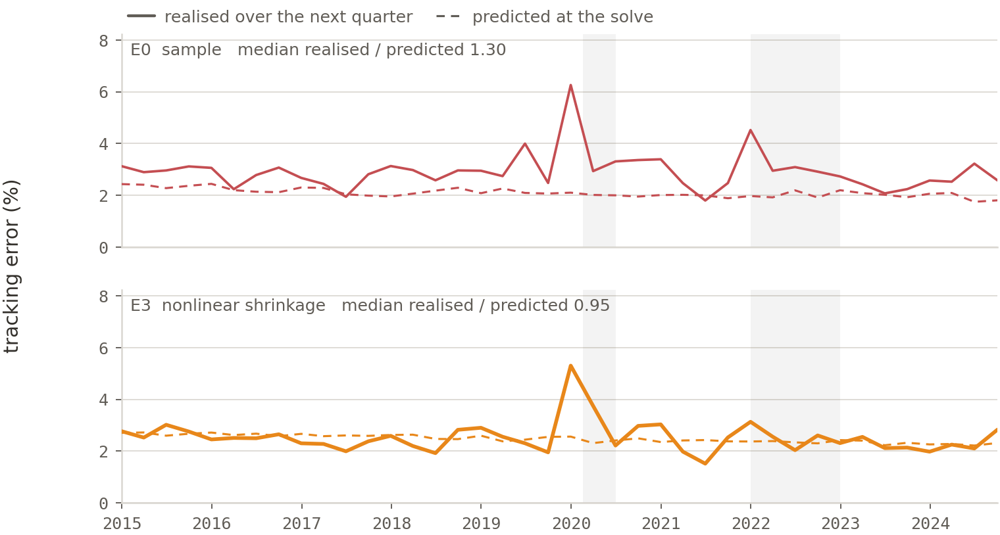
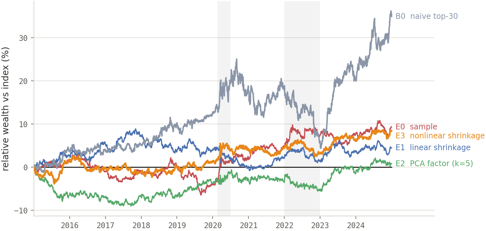

Sparse S&P 500 index tracking
Replicating the index with 30 stocks: which covariance estimator should feed the optimiser, and can you trust its risk forecast out of sample?
An index tracker tries to match the return of the S&P 500. The simplest way is to hold every stock in the index at roughly its benchmark weight; here, the question is how closely we can track it while holding only 30. The optimiser therefore has to choose both which 30 stocks to hold and how much weight to give each one, with the aim of minimising tracking error, the volatility of the portfolio's return relative to the index.
To make that choice, the optimiser needs a covariance matrix, \(\Sigma\), describing how the stocks move together. If \(\Sigma\) were known, the optimisation problem is standard. In practice it has to be estimated from historical returns, and that is the difficult part. With \(N \approx 500\) stocks and only \(T=504\) daily observations, roughly 125,000 distinct covariance entries are being estimated from two years of data. At \(N/T \approx 1\), the sample covariance is noisy, particularly in its smallest eigenvalues, which are exactly the directions to which a minimum-variance optimiser is most sensitive.
So the experiment holds the portfolio problem fixed and changes only the estimate \(\hat{\Sigma}\). The question is whether a better covariance estimate produces lower realised tracking error and better-calibrated risk forecasts out of sample. Both matter: a tracker that performs well but systematically understates its risk is difficult to use for risk budgeting.
Everything is point-in-time, using CRSP daily stock returns and S&P 500 membership data from 2003–2024, with survivorship and delisting bias handled explicitly. Historical add and drop dates reconstruct the constituent set on each day, benchmark weights are based on previous-close market capitalisations, and delisting returns are included in each stock's final observation.
Because every result is measured against this reconstructed benchmark, I checked it against CRSP's published value-weighted total-return series. The mean difference is just \(-0.0039\%\) per year, effectively zero, so later tracking error is not being driven by errors in the benchmark reconstruction.
The backtest is a quarterly walk-forward over 80 rebalances with a one-day implementation lag. The first 40 rebalances, from 2005–2014, are used for development; the final 40, from 2015–2024, form a frozen holdout that is scored once after the configurations are fixed.
At each rebalance I solve one cardinality-constrained mixed-integer quadratic programme, minimising active variance
Turnover is measured against drifted pre-trade weights \(w^{\text{drift}}\). Every constraint is fixed by design rather than tuned, and the same programme runs for all four estimators; only \(\hat{\Sigma}\) changes.
The estimators form a ladder of increasing intervention in the eigenvalue spectrum:
Sample covariance. No regularisation, no tuning knobs. The control: how much do the regularisers add over doing nothing?
Ledoit–Wolf linear shrinkage toward a constant-correlation target. One global intensity, closed-form and recomputed each window, moving every eigenvalue the same fraction toward the target.
PCA truncation in correlation space. Keep the top \(k\) eigenvectors and restore the missing residual through \(\mathrm{diag}(C - C_k)\), giving \(k\) common factors plus stock-specific risk. \(k = 5\) is the only tuned parameter in the project, fixed on development before 2015.
Analytical nonlinear shrinkage (Ledoit–Wolf 2020). Each eigenvalue gets its own correction: the market direction passes through nearly intact while the crowded noise bulk is compressed toward the middle. Tuning-free, and valid at \(N/T \approx 1\).
Not an estimator, and not in the spectra below: the naive tracker simply holds the thirty largest benchmark names, renormalised, with no optimisation at all. It runs through identical drift and exit accounting, so the only difference is how the thirty were chosen.

Fig. 1 showed that the regularised estimators mainly differ in how they treat the noisy lower end of the covariance spectrum. Out of sample, that matters. B0, which simply holds the 30 largest index members, produces 5.32% annualised tracking error. Using the covariance structure to optimise the basket cuts this to about 3%, and E3 improves it further to 2.59%. The main gain therefore comes from optimisation; better covariance estimation provides an additional, economically meaningful improvement.
That second improvement is comparable to adding many more stocks. With E2, increasing the portfolio from 30 to 100 names lowers tracking error by 0.74 percentage points; switching from E2 to E3 at 30 names lowers it by 0.44 points. Better covariance estimation therefore captures about 60% of the benefit of more than tripling the portfolio size.
The estimators separate more clearly on risk calibration. At each rebalance I compare predicted tracking error with what was realised over the next quarter; a realised-to-predicted ratio of 1 means the forecast was right on average. E3 comes in at 0.95, while E1 and E2 are around 1.15–1.17 and E0 reaches 1.30. In other words, the other estimators systematically understate risk. E0 is the clearest failure: its predicted-realised correlation is essentially zero, so its forecast barely responds as realised risk changes. E3 is much better calibrated, although none of the estimators predicts quarter-to-quarter changes especially strongly.

The result is also stable across market regimes. COVID roughly doubles tracking error for every estimator, but 2022 has little effect on the optimised portfolios while B0 deteriorates materially. Fig. 3 tells the same story over the full decade: the optimised trackers remain close to the index, whereas B0 drifts far above it because of its concentration in mega-cap stocks. For an index tracker, that relative gain is tracking error rather than success.

E3 initially failed badly on the holdout, producing 8.47% tracking error despite looking reasonable in development. A simple diagnostic showed that its estimated covariance matrix was retaining only about 4% of the benchmark's own variance, pointing to a numerical problem rather than an economic one.
The issue was in the nonlinear-shrinkage kernel: at \(N/T \approx 1\), very small eigenvalues pushed an intermediate calculation into a regime where the closed form lost floating-point precision. Replacing that unstable calculation with an equivalent asymptotic form restored the covariance structure and reduced holdout tracking error from 8.47% to 2.59%. The same instability was present in the reference implementations, so reproducing a reference result was not enough to establish correctness.
Costs enter through a turnover cap rather than directly in the objective. A natural extension would price trading explicitly and trace the trade-off between tracking error and transaction costs.
E2 also uses purely statistical factors. Replacing them with an industry- and style-based risk model would test whether economically structured covariance estimates improve on the statistical approach.
Finally, rebalancing is fixed to a quarterly schedule. Because E3's risk forecasts are well calibrated, a natural next step is to test whether rebalancing only when predicted tracking error becomes large can reduce unnecessary trading.